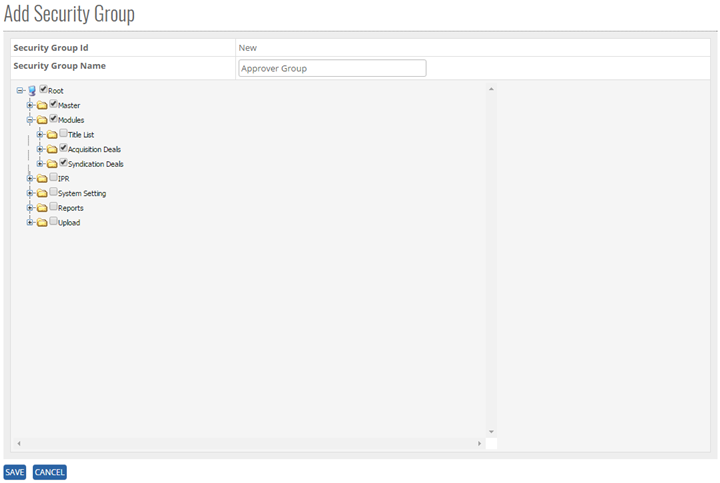


	<section>
		<article>
			<h2>User Mgmt<span></span></h2>
			<p></p>
			<h2>Security Group<span></span></h2>
			<div>
				<p></p>

				<p>Security Group comes under User Mgmt module. It can be accessed by user who has rights for this module.</p>

				<p>Go To >> Master >> User Mgmt>>Security Group>><b>ADD</b></p>

				<p><b>To ADD a "Security Group" in the system, system will have following fields.</b></p>

				<p>- User can enter Security Group Name in the Text Box. (Alphanumeric is valid)</p>


				<p>Click On <b>ADD Button</b>. User will get the List of All module, where Admin can give rights to any user according to security Group Name</p>

				<div class="triangle-border top">				
					
				</div>

				<p>Click on <b>Save Button</b>, user will get alert message <b>"Record Updated Successfully"</b></p>

				<p>Click on Cancel Button the add operations and previous window will appear and data should not be saved.</p>


				<p><b>Modifying Existing Security Group</b></p>

				<p>The user who has a right to edit can edit the existing <b>"Security Group List"</b> in the system. All the fields can be edited by user, which impacts all its references in the system.</p> 

				<p>Click <b>Edit</b>, Security Group List Column will be shown and all Root list page will come as per rights given to user (Selected list box we can see in below image)</p>

				<p>Go To >> Master>>User Mgmt>>Security Group>>(Security Group Name) >> <b>EDIT</b></p>

				<p>System will allow editing all the Security Group details. </p>

				<p>Click <b>Update</b> to save the currently added operations, user will get alert message <b>"Record Updated Successfully"</b>.</p>

				<p>Click <b>Cancel</b> to cancel the add operations and previous window will appears and data should not save.</p>

				<p><b>Note:</b> In case Approval for deal Acquisition/Syndication as assigned at any other relevant modules. System does not allow to deselect the Any module (if Any deal has been approved by same user)</p>


				<p><b>De-Activate / activating existing Security Group</b></p>

				<p><b>DeActive</b> - Click on Deactivate Button, once the button is clicked it will ask confirmation message "Are you sure you want to Deactivate this record" with "OK and cancel" button.</p>

				<p>If user clicks on OK Button, record will get deactivated and if clicked on Cancel, record will not get deactivated.</p>

				<p><b>Active</b> - Same way once a record is deactivated, system will show Active button. If user clicks on Active button, record will get activated.</p>


				<p><b>Search /Show All Criteria</b></p>

				<p>- User can search by security Group Name and then click on <b>Search</b>, it will show the result as per the search criteria. User can search name by single alphabet.</p>

				<p>- If user want to check all Security Group then click on <b>Show All</b> Button. It will show the list</p>
				 
				<p>- Click on page no, System will navigate the desired page, per page 10 records will be displayed. </p>
			</div>
		</article>
	</section>